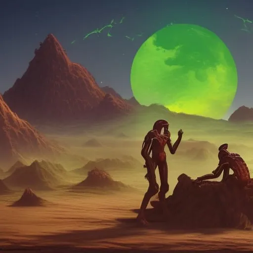

"Niraxus: Nova nada"
Poglavlje 4: "Susreti s vanzemaljcima"
Dok je Nebula Explorer kružio oko Zemljinog Mjeseca, posada je raspravljala o mogućnosti susreta s vanzemaljskim civilizacijama na svom putu do novog planeta. Brodski znanstveni časnik, dr. Ahmed Ali, bio je zadužen za praćenje bilo kakvih znakova vanzemaljskih civilizacija i analiziranje svih podataka koji su prikupljeni. Dr. Ali je bio mladi, ambiciozni znanstvenik egipatskog podrijetla. Imao je strast prema astrobiologiji i svoju je karijeru posvetio proučavanju izvanzemaljskih civilizacija. Bio je vrijedan član posade i poštovali su ga kapetan i ostali časnici. Dok je brod putovao oko Mjeseca, dr. Ali je bio na komandnom mostu i razgovarao o potencijalu izvanzemaljskih civilizacija s kapetanom Patelom. "Kapetane, pregledavao sam podatke o poznatim vanzemaljskim civilizacijama koje su stupile u kontakt s ljudima", rekao je dr. Ali. "Nova, možeš li mi pokazati dnevnik poznatih vanzemaljskih civilizacija na koje smo do sada naišli?" "Naravno, dr. Ali", odgovorio je Novi glas. "Uključujući njihove osobine, karakteristike, zvjezdani sustav, GPS koordinate, fizički izgled, biološku anatomiju, diplomaciju prema ljudima i ponašanje." Na ekranu ispred dr. Alija pojavio se zapisnik s popisom svih vanzemaljskih civilizacija s kojima su se ljudi do sada susreli: »Zorax: Napredna tehnologija, miroljubiv, Zvjezdani sustav: Zorax-alpha, GPS koordinate: -45.0N, 90.0W, Fizički izgled: Humanoid, tri prsta, plava koža, Biološka anatomija: Na bazi ugljika, udisanje kisika, Diplomacija prema ljudima : Otvoren i kooperativan, Ponašanje: Neagresivno »Valtor: Poljoprivredne vještine, miroljubiv, Zvjezdani sustav: Valtor-beta, GPS koordinate: 45.0S, 90.0E, Fizički izgled: Četveronožac, zeleno krzno, Biološka anatomija: Na bazi silikona, diše vodu, Diplomacija prema ljudima: Otvorena i kooperativna , Ponašanje: Neagresivno »Kaltor: Agresivno ponašanje, Zvjezdani sustav: Kaltor-gama, GPS koordinate: 0.0N, 0.0E, Fizički izgled: Insektoid, višekraki, ljubičasti egzoskelet, Diplomacija prema ljudima: Neprijateljsko, Ponašanje: Agresivno »Xantor: Vrlo inteligentan, Zvjezdani sustav: Xantor-delta, GPS koordinate: 45.0N, 0.0E, Fizički izgled: Humanoid, velike oči, bijela kosa, Biološka anatomija: Na bazi ugljika, udisanje kisika, Diplomacija prema ljudima: Otvorena i kooperativan, Ponašanje: Neagresivno »Altor: Napredna tehnologija, Zvjezdani sustav: Altor-epsilon, GPS koordinate: - -45.0S, 0.0W, Fizički izgled: Reptilski, četiri uda, zelene ljuske, Biološka anatomija: Na bazi ugljika, udisanje kisika, Diplomacija prema ljudima: Neutralan, Ponašanje: Neagresivno »Galtor: Ratni, Zvjezdani sustav: Galtor-zeta, GPS koordinate: 0.0S, 90.0W, Fizički izgled: Ptičji, krila, crveno perje, Biološka anatomija: Na bazi ugljika, udisanje kisika, Diplomacija prema ljudima: Neprijateljsko, Ponašanje: Agresivno »Faltor: Poljoprivredne vještine, Zvjezdani sustav: Faltor-eta, GPS koordinate: 45.0N, 90.0W, Fizički izgled: Humanoid, izdužena glava, narančasta koža, Biološka anatomija: Na bazi ugljika, udisanje kisika, Diplomacija prema ljudima: Otvorena i kooperativan, Ponašanje: Neagresivno »Haltor: Visoko napredna civilizacija, Zvjezdani sustav: Haltor-theta, GPS koordinate: -45.0S, 90.0E, Fizički izgled: Humanoid, izdužena glava, narančasta koža, Biološka anatomija: Na bazi ugljika, diše kisik, Diplomacija prema ljudima: Otvoren i kooperativan, Ponašanje: Neagresivno »Jaltor: Visoko duhovan, Zvjezdani sustav: Jaltor-jota, GPS koordinate: 0.0N, 45.0E, Fizički izgled: Humanoid, izdužene uši, zelena koža, Biološka anatomija: Na bazi ugljika, udisanje kisika, Diplomacija prema ljudima: Otvorena i kooperativan, Ponašanje: Neagresivno »Kaltor: Napredna tehnologija, Zvjezdani sustav: Kaltor-kappa, GPS koordinate: 45.0S, 45.0W, Fizički izgled: Humanoid, izdužena glava, narančasta koža, Biološka anatomija: Na bazi ugljika, udisanje kisika, Diplomacija prema ljudima: Otvorena i kooperativan, Ponašanje: Neagresivno Dok je dr. Ali pregledavao popis, ostali su ga časnici na mostu također pomnije pogledali. "Kapetane, jeste li ikada čuli za civilizaciju Jaltor?" upita dr. Ali. "Da, jesam", odgovorila je kapetan Patel. "Oni su visoko duhovna civilizacija s naprednim poljoprivrednim vještinama. Imaju otvorenu i kooperativnu diplomaciju prema ljudima i neagresivno ponašanje." "Upravo tako", rekao je dr. Ali. "Proučavao sam njihovu kulturu i imaju jaku tradiciju trgovanja s drugim civilizacijama. Imaju posebno dobar odnos s ljudima i mi trgujemo s njima mnogo godina." "Čime trgujemo s njima?" upita kapetan Patel. "S njima uglavnom trgujemo poljoprivrednim proizvodima i mineralima", odgovorio je dr. Ali. "Ali njihov omiljeni trgovački artikl je rijedak začin koji koriste u svom tradicionalnom kuhanju. Također rade posebnu vrstu kave koju ljudi jako traže. I znam da imate posebnu sklonost prema alkoholu koji oni proizvode." "Da, želim", rekao je kapetan Patel. "To je jedinstvena mješavina njihovih tradicionalnih začina i ima glatki, bogati okusa. Uvijek se pobrinem da napravim zalihe kad god sklapamo trgovinu s njima." Posada na mostu nastavila je raspravu, pažljivo proučavajući podatke na dnevniku i pripremajući se za sve potencijalne susrete s izvanzemaljskim civilizacijama. Bili su uzbuđeni istraživati nepoznato i dolaziti do novih otkrića i znali su da će civilizacija Jaltor biti vrijedan saveznik na njihovu putu. "Važno je da proučimo te civilizacije i njihove osobine prije nego stupimo u kontakt s bilo kojom vanzemaljskom vrstom na našem putovanju", rekao je kapetan Patel. "Moramo biti spremni na svako potencijalno neprijateljsko ponašanje, a također i razumjeti diplomatske odnose koje možemo imati s tim civilizacijama." "Dogovoreno", rekao je dr. Ali. "Predlažem da također prikupimo više informacija o nepoznatim vanzemaljskim civilizacijama koje bismo mogli susresti na našem putovanju. Bolje biti siguran nego žaliti." "Slažem se", rekao je navigacijski časnik. "Moramo biti svjesni svih potencijalnih opasnosti na našem putu." Posada na mostu nastavila je raspravu, pažljivo proučavajući podatke na dnevniku i pripremajući se za sve potencijalne susrete s izvanzemaljskim civilizacijama.